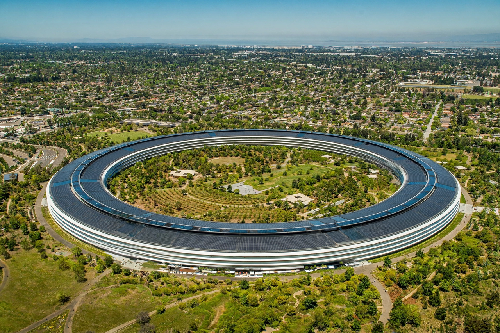

Apple Inc.
| Apple Inc. | |
|---|---|
[Image: The Apple logo — a bitten apple silhouette] | |
| Formerly | Apple Computer Company (1976–1977); Apple Computer, Inc. (1977–2007) |
| Type | Public |
| Traded as | Nasdaq: AAPL |
| Industry | Consumer electronics; software; online services |
| Founded | April 1, 1976; Los Altos, California, United States |
| Founders | Steve Jobs, Steve Wozniak, Ronald Wayne |
| Headquarters | 1 Apple Park Way, Cupertino, California, United States |
| Key people | Tim Cook (CEO); Arthur Levinson (chairman) |
| Products | iPhone, Mac, iPad, Apple Watch, AirPods, Apple TV |
| Services | App Store, iCloud, Apple Music, Apple Pay |
| Website | apple.com |
Apple Inc. is an American multinational technology company headquartered in Cupertino, California. Founded in 1976 by Steve Jobs, Steve Wozniak and Ronald Wayne, it is one of the world's largest technology companies by revenue and, along with Alphabet, Amazon, Meta and Microsoft, one of the "Big Five" American information technology companies. Apple designs, manufactures and markets consumer electronics including the iPhone smartphone, the Mac line of personal computers, the iPad tablet and the Apple Watch, and operates online services such as the App Store, iCloud and Apple Music through its website and retail stores.
History
Apple was founded on April 1, 1976, initially as Apple Computer Company, to sell the Apple I personal computer designed by Wozniak. The Apple II, introduced in 1977, became one of the first commercially successful mass-produced microcomputers. In 1984 Apple launched the Macintosh, the first successful personal computer sold with a graphical user interface and a mouse, promoted by the famous "1984" Super Bowl advertisement.
Jobs left the company in 1985 after a dispute with the board and founded NeXT; Apple struggled through the early 1990s against competition from Microsoft Windows PCs. In 1997 Apple acquired NeXT, bringing Jobs back; he soon became CEO. Under Jobs the company returned to profitability with the candy-coloured iMac in 1998, the iPod portable music player in 2001, the iPhone in 2007 — which redefined the smartphone industry — and the iPad in 2010.
Jobs died of pancreatic cancer in October 2011 and was succeeded by Tim Cook. Under Cook, Apple became the first publicly traded company valued at $1 trillion (2018), $2 trillion (2020) and briefly $3 trillion (2022). Since 2020 its Macs and other devices have used in-house Apple silicon processors, and in 2024 it released the Vision Pro mixed-reality headset and the Apple Intelligence set of artificial-intelligence features.
Products
Apple's hardware lines include the iPhone, Mac, iPad, Apple Watch, AirPods and Apple TV set-top boxes and smart speakers. Its operating systems include iOS, macOS, iPadOS, watchOS and tvOS. Services — among them the App Store, Apple Music, iCloud, Apple Pay, Apple TV+ and Apple Fitness+ — account for a growing share of revenue, and Apple Intelligence features have been integrated across its platforms.
Corporate affairs
Apple's headquarters since 2017 is Apple Park, a ring-shaped campus in Cupertino sometimes nicknamed "the spaceship", which uses a large rooftop solar installation and extensive landscaping. The company sells products through its own retail stores, including flagship locations, as well as through its online store. It has repeatedly ranked first in brand-value and market-capitalisation rankings.
Criticism
Apple has faced criticism and litigation over its App Store commissions and rules — including the Epic Games v. Apple case — over tax arrangements in Ireland that drew a European Commission state-aid decision, over repair restrictions addressed by "right to repair" campaigns, and over labour conditions in its supply chain, particularly at contract manufacturers in China.

Apple Park, the company's ring-shaped headquarters in Cupertino, California, seen from the air